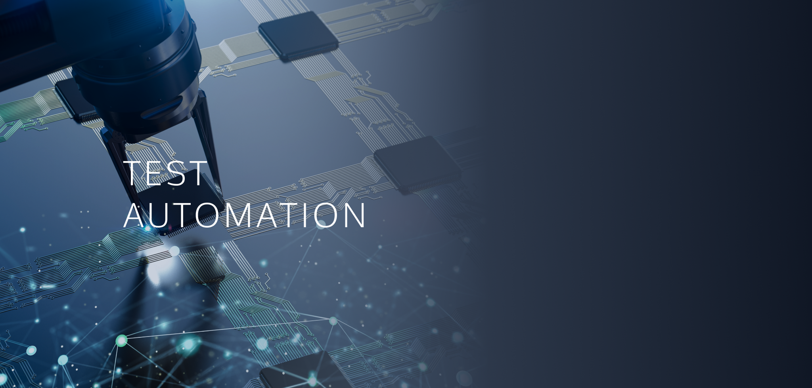

Test Automation
테스트 자동화
업데이트마다 반복되는 테스트를 자동으로 실행해 빠르고 일관되게 품질을 확인합니다. 오픈소스 맞춤 구축부터 파트너 솔루션까지 프로젝트에 맞는 방식을 제안합니다.

DEFINITION
테스트 자동화란?
테스트 자동화는 사람이 반복 수행하던 소프트웨어 테스트를 자동화 도구와 스크립트로 실행하는 것입니다.
배포할 때마다 기존 기능이 망가지지 않았는지 확인하는 회귀 테스트처럼 같은 테스트를 여러 번 반복해야 할 때 효과가 큽니다. 사람이 할 때보다 빠르고 결과가 일정하며, CI/CD 파이프라인에 연결하면 코드가 바뀔 때마다 테스트가 자동으로 실행됩니다.
- 한 줄 정의
- 반복 테스트를 도구와 스크립트로 자동 실행하는 것
- 효과
- 테스트 시간 단축, 결과 일관성, 잦은 배포에도 품질 유지
- 함께 쓰는 말
- 자동화 테스트, 테스트 자동화 구축, BDD 테스트
WHEN YOU NEED IT
이럴 때 테스트 자동화가 필요합니다
- 배포 때마다 같은 회귀 테스트를 손으로 반복한다
- 화면과 기능이 많아 테스트 시간이 출시를 늦춘다
- 같은 테스트인데 담당자마다 결과가 다르게 나온다
- CI/CD 파이프라인에 테스트를 연결하고 싶다
SOLUTIONS
프로젝트에 맞는 자동화 방식을 고릅니다
티벨은 최소 비용의 오픈소스 자동화를 직접 구축하고, Apptest.ai, Tricentis, Softbase, Symation, LG CNS와 협업해 고객별 요건에 맞는 솔루션을 제안합니다.
티벨 맞춤형 자동화OPEN SOURCE
고객 요구사항을 분석해 오픈소스로 개발합니다. 개발비 외 유지비용이 없고, 고객 인프라를 활용한 앱·웹 자동화에 강합니다.
Apptest.ai Ptero · StegoNO-CODE
코딩 없이 시나리오를 작성합니다. AI 학습 기반의 높은 인식률로 앱과 증권 MTS 자동화에 특히 강하며 단말 성능도 측정합니다.
Tricentis Tosca · qTestNO-CODE
AI Vision 인식률이 높고 계획부터 결과까지 통합 테스트 관리가 가능합니다. 통합 품질관리와 ERP 적용, RPA 구축에 강합니다.
Softbase 3handCODE
UI 솔루션 인식률이 높아 은행 등 통합단말(C/S 환경) 자동화에 강하며 RPA 구축을 지원합니다.
Symation CheckmateCODE
개발 라이프사이클 통합 품질관리와 CI/CD 연계 커스터마이징, RPA 구축과 단말 성능 측정을 지원합니다.
LG CNS PerfecTwinCODE
많은 화면의 기능과 대량 데이터 정합성을 점검해 차세대 프로젝트의 데이터·성능 검증에 강합니다.
PARTNERS
함께하는 자동화 파트너


WHY TBELL
BDD 기반 자동화로 비즈니스와 개발을 잇습니다
- 01
비즈니스 인력도 참여하는 테스트
BDD(행위 주도 개발) 시나리오는 업무 언어로 작성되어 기획·운영 인력도 테스트에 참여할 수 있습니다.
- 02
개발팀과 운영팀의 원활한 소통
같은 시나리오를 기준으로 이야기하므로 요구사항과 결과에 대한 오해가 줄어듭니다.
- 03
TestOps로 개발 흐름 안에
CI/CD와 관리 도구를 연동해 변경마다 테스트가 자동 실행되는 환경까지 구축합니다.
BDD 테스트 자동화 · TestOps
- TMAP AUTO Speech 테스트 자동화 (’23)
- TMAP AUTO Core 고도화 및 OEM 테스트 자동화 (’22)
- TMAP AUTO Core 테스트 자동화 개발 (’21)
- 웅진씽크빅 북클럽 앱 테스트 자동화 (’22)
- AMI(Advanced Metering Infrastructure) 테스트 자동화 (’22)
DevOps · ITSM
- TMAP AUTO Issue Sync System 개발 (’23)
- SKT TDE DevOps Data Migration to TMAP Mobility (’22)
- LIG넥스원 DevOps(SLM 시스템) 업그레이드 및 프로세스 개선 (’21)
- BizDevOps 시스템(EMS) 구축 (’20)
- HMM 전사 ITSM 구축 (’20)
- SKT TDE(DevOps) 전사 운영 (’16–’20)
PROCESS
테스트 자동화는 이렇게 도입합니다
대상 선정
자주 반복되고 결과 판정이 명확한 테스트부터 자동화 대상을 고릅니다.
도구 · 방식 결정
앱·웹·통합단말 등 환경과 예산에 맞춰 오픈소스 또는 솔루션을 정합니다.
시나리오 · 스크립트 구축
BDD 시나리오와 자동화 스크립트를 만들고 안정화합니다.
파이프라인 연계 · 운영
CI/CD와 연동해 변경마다 실행하고, 결과와 결함을 관리합니다.
FAQ
자주 묻는 질문
테스트 자동화란 무엇인가요?
사람이 반복해서 수행하던 테스트를 자동화 도구와 스크립트로 실행하는 것입니다. 업데이트마다 같은 기능을 다시 확인하는 회귀 테스트에 특히 효과적이며, CI/CD 파이프라인에 연결하면 코드가 바뀔 때마다 자동으로 실행됩니다.
모든 테스트를 자동화할 수 있나요?
자주 반복되고 결과 판정이 명확한 테스트가 자동화에 적합합니다. 새로운 기능의 탐색이나 사용성 평가처럼 사람의 판단이 필요한 영역은 수동 테스트와 함께 운영하는 것이 효과적입니다.
코딩을 몰라도 자동화를 할 수 있나요?
Apptest.ai Ptero·Stego처럼 코딩 없이 시나리오를 작성하는 솔루션이 있습니다. 환경과 목적에 맞춰 코딩 방식과 노코드 방식 중 적합한 방법을 제안합니다.
자동화 구축 비용이 부담됩니다.
티벨은 오픈소스를 활용한 맞춤형 자동화를 직접 구축할 수 있어, 개발비 외에 별도의 솔루션 유지비용이 들지 않는 방식도 선택할 수 있습니다.
반복 테스트, 이제 자동으로 돌리세요
지금 테스트 환경과 반복 업무를 알려 주시면 자동화 대상과 맞는 도구를 진단해 드립니다.
070-7777-9113 · 월–금 09:30–18:00 (점심 12:00–13:00)